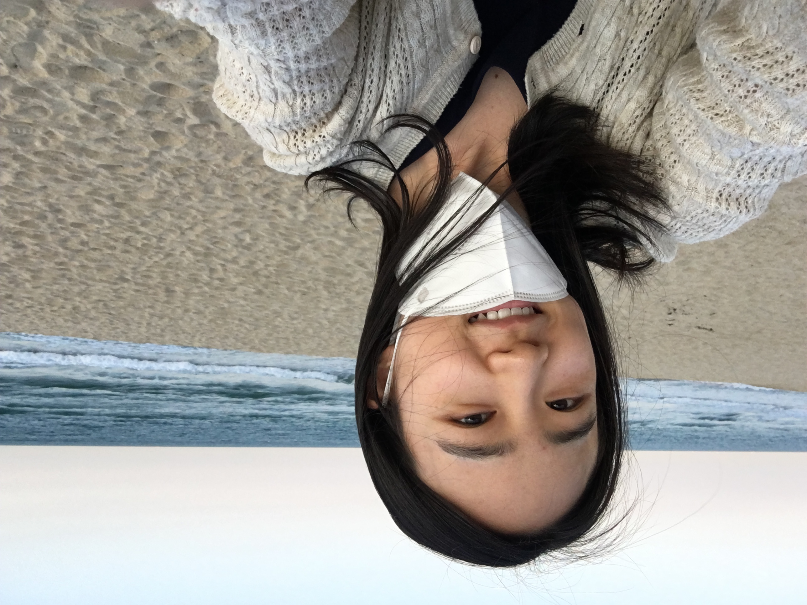

Hi! I am Soyoung, a 2nd year Master’s student in School of Information at University of Michigan. My research interests are Human Computer Interaction, Social Computing, Skill development, Community Development and Future of Work. I am training myself with mixed methods and community-based participatory design for my research. Currently I am working as a research assistant at Social Innovation Group a with Dr. Twanna Dillihaunt. Prior to graduate school, I worked as a product/project manager in business for 6 years.